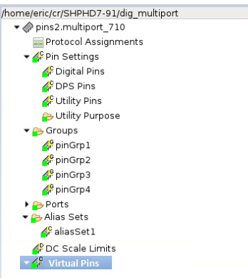
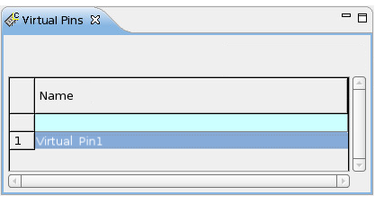

Virtual pins
Virtual pins are used to log test results against pins that are not directly connected by a pogo.
What are virtual pins
A virtual pin is an arbitrary pin name without an associated pogo number. It represents a pin that exists within the device itself rather than being a hard connection to the device through a pogo. A virtual pin is represented as an alphabetical string up to 64 characters in length. When virtual pins are defined in the system they are logged, together with all other defined pin types, in the configuration change event of the data log. The configuration change event is written at the beginning of the data log file when a pin configuration is loaded to the system. As with other pin types, the virtual pins in the configuration change event are each given a unique index, which is then referenced from test results that are generated during a subsequent device test.
Using the virtual pin feature you can log test results from the SMC_TEST(), TESTSET().judgeAndLog_ParametricTest() and TESTSET().judgeAndLog_ScanTest() APIs using the virtual pin names you have defined.
On loading a pin configuration file, the following information is listed:
- All pins
- All groups
- All virtual pins under the Virtual Pin section

How to setup virtual pins
Virtual pins are defined in the pin configuration and can be added to the pin configuration file (firmware) directly or by using the Pin Configuration view:
VPIN (<Virtual Pin Names>)
VPIN? ([<Virtual Pin Names> | "@"
])
In the VPIN query, specify a virtual pin name or the @ mark, that includes all pins.
You can also simultaneously define multiple virtual pins. The query returns a comma separated list of virtual pins:
Task> VPIN (V1) Task> VPIN (V2,V3) Task> VPIN? (@) VPIN (V1,V2,V3)
For example, for pins:
VPIN (MO_LO_TXOP_BGA) VPIN (MO_L1_TXOP)
VPIN? (@) returns:
VPIN (MO_LO_TXOP_BGA,MO_L1_TXOP)
If the pin name is specified but it does not exist, no data is returned and no message or error is reported.
Virtual pins can be added to the pin configuration file and edited using the Pin Configuration view.

You can export and import virtual pins to and from CSV files.
Examples
Using virtual pins in test methods with judgeAndLog_ParametricTest.
The following example illustrates how virtual pins are used in a test method using judgeAndLog_ParametricTest().
VP0001 and VP2000 are virtual pins.
#include "testmethod.hpp"
#include "mapi.hpp"
/**
* Test method class.
*
* For each testsuite using this test method, one object of this
* class is created.
*/
class ExampleVirtualPinsParametricTest: public testmethod::TestMethod {
protected:
/**
*Initialize the parameter interface to the testflow.
*This method is called just once after a testsuite is created.
*/
virtual void initialize()
{
}
/**
* This method is invoked per site.
*/
virtual void run()
{
string tSuiteName,ttestName;
GET_TESTSUITE_NAME( tSuiteName );
cout << "\n\n------------ TestVirtualPins.cpp (" << tSuiteName << ") ---------\n\n";
ARRAY_D values(2);
LIMIT limits;
/* Define example limits */
limits.low(TM::GE,11); limits.high(TM::LE,22);
/* Define example measurement values */
values[0]=11;
values[1]=22;
/* Log results against the virtual pins VP0001 and VP2000 */
TESTSET().judgeAndLog_ParametricTest("VP0001, VP2000", "VPIN_TEST1", limits, values);
return;
}
/**
*This function will be invoked once the specified parameter's value is changed.
*@param parameterIdentifier
*/
virtual void postParameterChange(const string& parameterIdentifier)
{
return;
}
/**
*This function will be invoked once the Select Test Method Dialog is opened.
*/
virtual const string getComment() const
{
string comment = " please add your comment for this method.";
return comment;
}
};
REGISTER_TESTMETHOD("ExampleVirtualPinsParametricTest", ExampleVirtualPinsParametricTest);
Using virtual pins in test methods with judgeAndLog_ScanTest()
The following example illustrates how virtual pins are used in a test method using judgeAndLog_ScanTest().
VP0001 and VP2000 are virtual pins.
#include "testmethod.hpp"
//for test method API interfaces
#include "mapi.hpp"
using namespace std;
/**
* Test method class.
*
* For each testsuite using this test method, one object of this
* class is created.
*/
class TestVirtualPinsScan: public testmethod::TestMethod {
protected:
int mSetToFail;
string mAlarmMsg;
/**
*Initialize the parameter interface to the testflow.
*This method is called just once after a testsuite is created.
*/
virtual void initialize()
{
//Add your initialization code here
//Note: Test Method API should not be used in this method!
}
/**
*This test is invoked per site.
*/
virtual void run()
{
SCAN_TEST_RESULT scanResult(TM::CYCLE_BASED_LOGGING);
scanResult.totalFailures(4);
scanResult.totalCyclesExecuted(64);
/*
* Virtual Pins, the setup provides VP0001..VP2000.
* The first and last of 2000 Virtual Pins are also tested.
*/
STRING_VECTOR pins = {"VP0001","VP2000"};
ARRAY_CHAR expected(4);
expected[0] = 'L';
expected[1] = 'L';
expected[2] = 'H';
expected[3] = 'H';
scanResult.pin(pins[0]).expectedData(expected);
expected[0] = 'H';
expected[1] = 'L';
expected[2] = 'L';
expected[3] = 'H';
scanResult.pin(pins[1]).expectedData(expected);
ARRAY_LL cycles(4);
cycles[0] = 0;
cycles[1] = 0;
cycles[2] = 1;
cycles[3] = 1;
scanResult.pin(pins[0]).failingCycles(cycles); /* Exp: LLHH, Rcv: 0011 */
scanResult.pin(pins[1]).failingCycles(cycles); /* Exp: HLLH, Rcv: 0011 */
/**
* Push failures to datalog, the virtual pin names should be logged
* instead of "no_pin_name_given"
*/
TESTSET().cont(true).judgeAndLog_ScanTest(scanResult);
return;
}
/**
*This function will be invoked once the specified parameter's value is changed.
*@param parameterIdentifier
*/
virtual void postParameterChange(const string& parameterIdentifier)
{
//Add your code
//Note: Test Method API should not be used in this method!
return;
}
/**
*This function will be invoked once the Select Test Method Dialog is opened.
*/
virtual const string getComment() const
{
string comment = " please add your comment for this method.";
return comment;
}
};
REGISTER_TESTMETHOD("TestVirtualPinsScan", TestVirtualPinsScan);
Functional changes
- Introduced in SmarTest 7.10.0